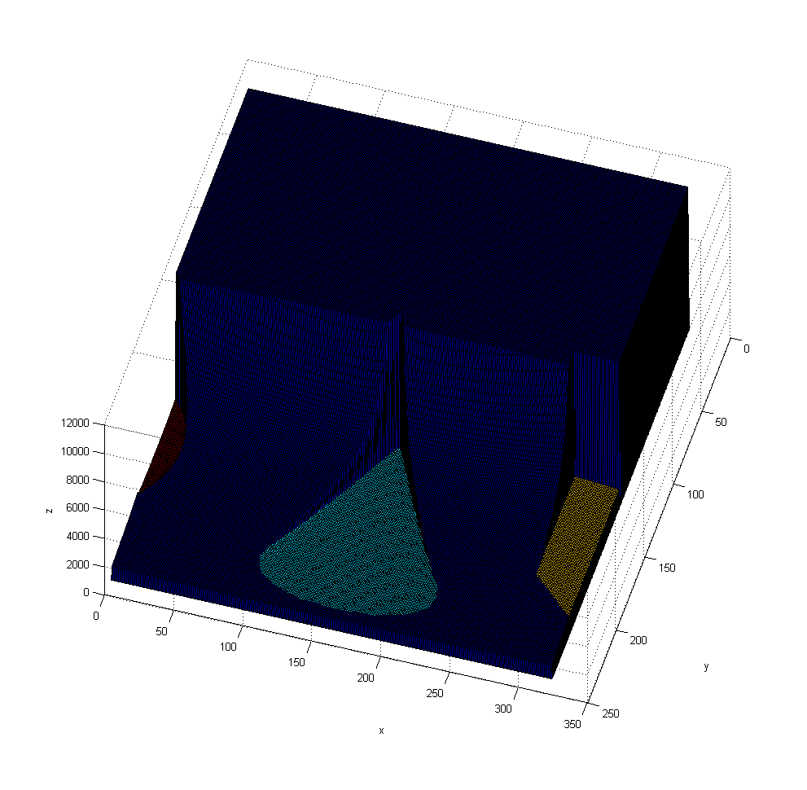
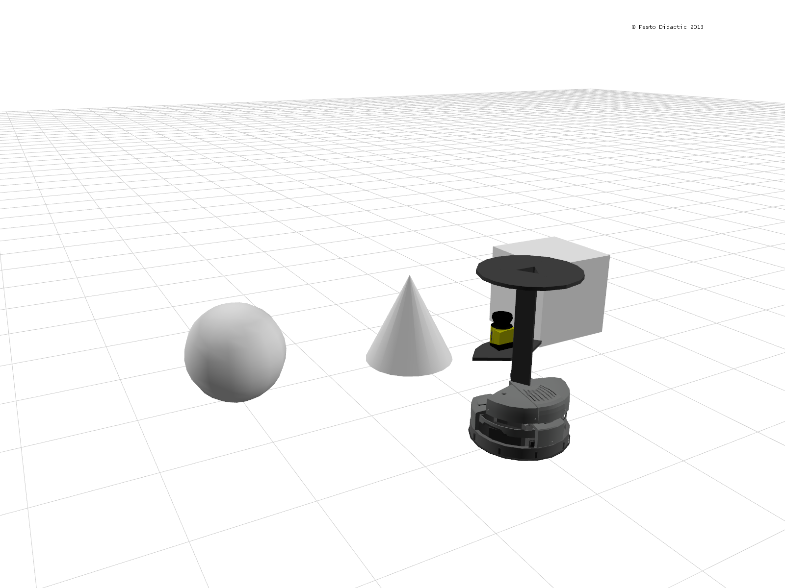

Kinect Example
This example illustrates the use of the kinect sensors on Robotino. After connecting to Robotino this example tries to grab data from Robotino's first kinect sensor. On success, data is displayed in a surface plot
Contents

Description
Robotino can be equipped with up to 4 kinect sensors. The RobotinoSIM modell "Robotino3 with Laserscanner" is equipped with 4 kinect sensors which are activated when a client connects to the corresponding depth topic.

Code explanation
First we will need to construct objects that we will be requiring in our program. In this program, we will require objects of Com and Kinect.
ComId = Com_construct; KinectId = Kinect_construct;
Upon successful contruction of the objects, an Id is returned for each object. This Id is used later when communicating with Robotino. Now we need to set the address of Robotino and then connect to it. This is done as follows.
Note the IP address and port number might be different
Com_setAddress(ComId, '127.0.0.1');
Com_connect(ComId);
Once we are connected to Robotino, we need to bind the kinect object we created to Robotino using the ComId. This can be done as follows.
Kinect_setComId(KinectId, ComId);
We then start our "stop watch" to limit the example execution to 10 seconds.
tStart = tic;
We initiate a while loop based on the condition that Robotino's bumper hasn't detected a collision. Here we obtain the distance sensor readings and based on a simple comparison decide whether if we are approaching an obstacle or not. In case Robotino is approaching one, using the OmniDrive_setVelocity function we stop the robot and make it rotate. In case there is no obstacle in front of Robotino then using the same OmniDrive_setVelocity function, we let Robotino continue moving forward.
while (Kinect_grab(KinectId) ~= 1) tElapsed = toc(tStart); % If 60 seconds are elapsed then exit while loop if(tElapsed >= 10 ) break; end; end; [ success, depth_data, object_data, depthDataWidth, depthDataHeight, objectDataWidth, objectDataHeight, format, stamp ] = Kinect_getReadings( KinectId ); if depthDataWidth>0 && depthDataHeight>0 if objectDataWidth==depthDataWidth && objectDataHeight==depthDataHeight surf(depth_data,object_data); else surf(depth_data); end; xlabel('x/pixel'); ylabel('y/pixel'); zlabel('z/mm'); end;
We will need to disconnect from Robotino as follows.
Com_disconnect(ComId);
It is also recommended to destroy all objects that we created for our example. This can be done as follows.
Kinect_destroy(KinectId); Com_destroy(ComId);
Video
No video available yet.